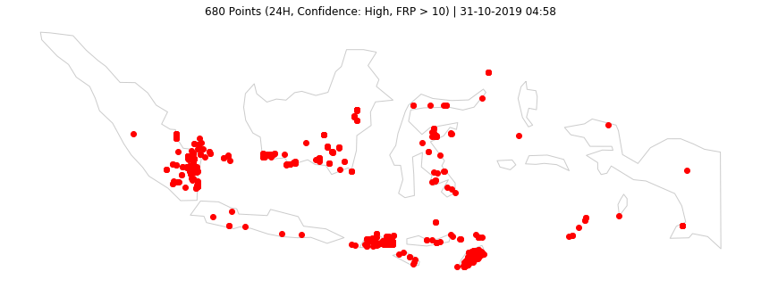
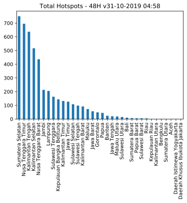

Last updated: 31-10-2019 04:58
Data VIIRS (NASA FIRMS)
Titik Api @Indonesia
3633 (24H) | 4840 (48H) | 20163 (7D)
Olah Data dan Visualisasi Sebaran Titik Api di Indonesia.
Acq. Date: 29-10-2019 10:24 -- 31-10-2019 00:30 WIB (24H) | 28-10-2019 10:42 -- 31-10-2019 00:30 WIB (48H) | 23-10-2019 10:36 -- 31-10-2019 00:30 WIB (7D)
Home Top 3 GitHub Sumatera Kalimantan Sulawesi Maluku & Papua Jawa Bali & NT

Data 24H
| Kategori | #Titik |
|---|---|
| Confidence High | 109 |
| Confidence Nominal | 3185 |
| Confidence Low | 339 |
| Total | 3633 |
| Confidence High or FRP>10 | 680 |
Data 48H
| Kategori | #Titik |
|---|---|
| Confidence High | 132 |
| Confidence Nominal | 4209 |
| Confidence Low | 499 |
| Total | 4840 |
| Confidence High or FRP>10 | 878 |
Data 24H
| # | Provinsi | Total | H | N | L | HFRP10 |
|---|---|---|---|---|---|---|
| 1 | Sumatera Selatan | 613 | 13 | 525 | 75 | 103 |
| 2 | Kalimantan Tengah | 548 | 11 | 528 | 9 | 74 |
| 3 | Nusa Tenggara Timur | 493 | 11 | 368 | 114 | 94 |
| 4 | Kalimantan Selatan | 377 | 8 | 366 | 3 | 21 |
| 5 | Nusa Tenggara Barat | 314 | 40 | 270 | 4 | 158 |
| 6 | Lampung | 193 | 1 | 148 | 44 | 29 |
| 7 | Jambi | 149 | 8 | 140 | 1 | 39 |
| 8 | Kepulauan Bangka Belitung | 133 | 3 | 120 | 10 | 22 |
| 9 | Kalimantan Timur | 116 | 2 | 111 | 3 | 17 |
| 10 | Kalimantan Barat | 83 | 3 | 80 | 0 | 19 |
Data 48H
| # | Provinsi | Total | H | N | L | HFRP10 |
|---|---|---|---|---|---|---|
| 1 | Sumatera Selatan | 750 | 13 | 661 | 76 | 106 |
| 2 | Nusa Tenggara Timur | 695 | 14 | 538 | 143 | 123 |
| 3 | Kalimantan Tengah | 637 | 12 | 616 | 9 | 84 |
| 4 | Kalimantan Selatan | 516 | 14 | 489 | 13 | 54 |
| 5 | Nusa Tenggara Barat | 436 | 41 | 322 | 73 | 224 |
| 6 | Jambi | 213 | 8 | 204 | 1 | 40 |
| 7 | Lampung | 205 | 1 | 160 | 44 | 29 |
| 8 | Sulawesi Tenggara | 163 | 1 | 130 | 32 | 25 |
| 9 | Kepulauan Bangka Belitung | 144 | 3 | 131 | 10 | 23 |
| 10 | Kalimantan Timur | 132 | 3 | 117 | 12 | 23 |
Data 24H
Data 48H
